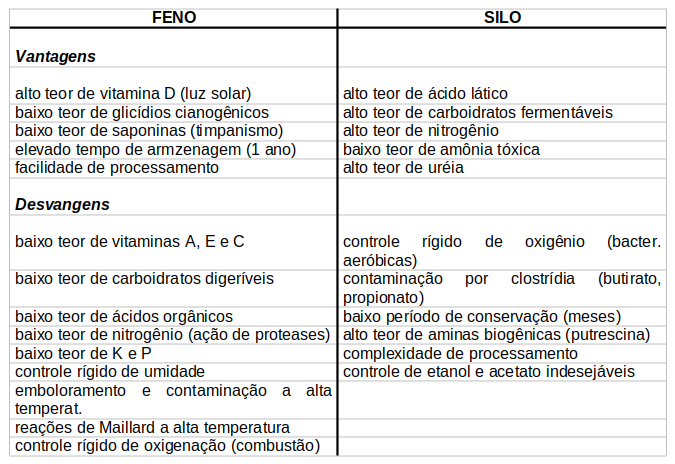

Bioquímica do Silo e do Feno
Introdução
Desde que exista pastagens e forragens, gramíneas ou leguminosas, na área de criação, essas podem ser utilizadas para alimentação de rebanhos, reduzindo custos relativos ao preparo e oferta de rações. Acontece que planta é um ser vivo e, como tal, morre e apodrece quando cortada. Neste sentido, surgem dois processos de conservação de matéria vegetal para rebanho, a fenação e a ensilagem. Em ambos, o objetivo final é o de se conservar a fonte nutriente por tempos além da atividade biológica da planta. Exemplificando, a ensilagem pode ser armazenada por até 6 meses, enquanto que o feno, por mais de 1 ano. Os processos são distintos, com vantagens e desvantagens para cada um. A fenação é um processo de desidratação vegetal, que busca coibir a atividade microbiana sobre o produto final.
A ensilagem é o oposto, um processo em que o produto final se dá com alto teor hídrico (35%), e onde a fermentação microbiana desempenha papel chave no produto final. A fenação envolve o corte da planta, sua secagem, enfardamento, empilhamento e armazenagem. Como se trata de um processo de desidratação, deve-se controlar todas as etapas para que não ocorra umidificação do feno, caso em que a contaminação por bolores e bactérias ocorre com facilidade extrema.
Como a planta vive de água, sua desidratação faz com que ocorra uma perda significativa de constituintes biológicos, incluindo aí vitaminas e aminoácidos, reduzindo a qualidade nutricional do feno. Esta é promovida pela atividade enzimática da própria planta, após o corte, e durante um período curto de tempo. Já ensilagem, que também pode ser conduzida em épocas chuvosas, por sua vez, envolve uma perda nutricional menor, já que o produto final é bastante hidratado.
Contudo, o material do silo possui menor período de conservação, além de ser mais oneroso e de muito maior controle pelo criador. E pelo mesmo motivo, a água, é um produto sujeito a contaminação e intoxicação maiores que o feno. O controle do crescimento microbiano na ensilagem deve ser feito no sentido de se permitir um crescimento de lactobacilos, com produto final sendo principalmente representado pelo ácido lático. De modo algum deve-se permitir o crescimento de clostrídio no silo, caso em que pode ocorrer uma contaminação do mesmo com posterior infecção do rebanho pelo silo alimentado.
Detalhes
Fenação e ensilagem são dois procedimentos utilizados para conservação de material vegetal (gramíneas, leguminosas, pastagens, forragens), fornecido para alimentação de rebanhos. Isto se faz necessário desde que existe um metabolismo, inicialmente da própria planta e posteriormente de microorganismos, agindo sobre o tecido vegetal após o corte dos mesmos. Neste sentido, a pastagem ainda “vive” durante algum tempo após cortada, ocorrendo continuidade inicial da fotossíntese sob a luz do sol (algumas horas), atividade enzimática endógena, perda celular, aumento de rigidez, oxidação de carboidratos, quebra de proteínas, e decomposição microbiana dos tecidos morimbundos.
Em poucas palavras, a fenação leva a uma desidratação em que a atividade microbiana e a degradação bioquímica ficam inibidas, enquanto que a ensilagem, a uma preservação do tecido com alto teor de água e formação subsequente de ácidos orgânicos e de derivados.
Fenação.
A fenação busca um produto seco de alta qualidade, físico-química e nutricional. As etapas da fenação são passíveis de controle pelo criador, e envolvem o corte, a retirada do excesso de água do tecidos (secagem), o enfardamento, o empilhamento e a armazenagem (campo, armazém, celeiro). Os mecanismos fisiológicos da perda de água pelo corte dependem do equilíbrio entre a tensão de vapor de água interna próxima da superfície da planta, e a tensão de vapor de água do ar ambiente.
A quantidade de vapor de água perdida pela epiderme da folha é muito pequena em relação à quantidade perdida quando os estômatos encontram-se abertos. Essa quantidade passa a ser significativa, entretanto, por ocasião do fechamento dos mesmos.
A desidratação também resulta em rompimento dos vacúolos, e dano celular. Assim, o teor de desidratação vegetal depende da temperatura ambiente, espécie vegetal, abertura de estômatos e água livre disponível nas células. Perda nutricional é eminente em processos de conservação, não sendo diferente com a fenação. Esse processo de conservação reduz o teores de vitaminas A e E, aumenta de D (luz do sol), e aumenta a perda de hidratos de carbono digestíveis.
A idade da pastagem também influi, uma vez que o feno imaturo contém alto teor de carboidratos, ao passo que a pastagem madura, um conteúdo menor de matéria seca e menor valor nutritivo. Além disso, há uma perda apreciável de carboidratos solúveis (glicose, frutose, amido e frutosanas), ácidos orgânicos, e nitrogênio. Este último se dá pela atuação de proteases vegetais, com liberação de aminoácidos, peptídios e nitrogênio não protéico.
Glicosídios cianogênicos também são destruidos na fenação, o que reduz a incidência de intoxicação ácido-prússica do sorgo (Shorgum sp, trevo branco (Trifolium repens) e outras forragens. Saponinas também são perdidas na desidratação, o que contribui para um menor índice de timpanismo em ruminantes. Elementos como K e P também são perdidos, perda esta acentuada com a chuva.
A segunda etapa, retirada de água dos tecidos, pode ser feita manualmente, virando-se constantemente as folhagens, ou mecanicamente, com ventilação adequada ou artificial (fenadores de cavalete), ou aumento da temperatura. Este último procedimento, contudo, pode levar ao emboloramento do feno ou contaminação bacteriana (por volta de 450C).
Secagem por calor é um processo arriscado, já que o efeito destrutivo do calor sobre a digestibilidade protéica filia-se à reação bioquímica de Maillard, onde a ligação de carboidratos com aminas resulta em produtos resistentes à digestão. O enfardamento deve ser feito com menor entrada de ar possível na pilha, a fim de se evitar o metabolismo oxidativo microbiano e oxidação química, a qual pode gerar combustão espontânea. Durante a armazenagem, deve-se evitar a chuva, pois a planta seca se torna excelente substrato microbiano quando umidificada.
Assim, uma boa fenação requer tempo quente e seco, com sol encoberto (sol forte desidrata demasiadamente a planta, com perda nutricional e descoloração exagerada), e proteção contra chuva (cobertura plástica). Aditivos químicos podem ser também utilizados (ácido propiônico, 20kg/ton) para o armazenamento do feno com altos teores de umidade (35%). A qualidade da forragem também é importante, incluídos aí a composição química da mesma, e as condições ambientais (clima, tempo, solo, manejo, pragas, etc).
Há ainda um declínio na digestibilidade das forragens com a maturação vegetal, uma vez que durante o crescimento da planta ocorre uma redução no teor protéico e aumento das fibras, com aumento também na lenhificação vegetal. Fotoperíodo é outro fator importante. A percentagem de água das forragens é menos elevada durante o dia, o que faz com que seu corte ao amanhecer resulte em feno com alto teor de umidade, com as consequências já explicitadas para o mesmo.
Ensilagem
A idéia central da ensilagem é a de se obter um produto fermentado de ácido lático. Neste sentido, dá-se preferência a um metabolismo anaeróbico de bactérias do ácido lático, ou homofermentativas. A boa forragem para ensilagem deve conter uma quantidade apreciável de carboidratos fermentáveis (para assegura a redução adequada no pH), a presença de uma flora microbiana adequada, e uma capacidade de obter e manter condições anaeróbias no silo. Forragens úmidas e com pouco teor de glicídios devem ser inicialmente desidratadas, ou aditivadas com melaço (9 kg/ton) ou ácido fórmico (2 kg/ton).
O principal objetivo na conservação de forrageiras por ensilagem é preservar o material componente das plantas com o mínimo de perdas de seus nutrientes. Além disso, como o processo é intrínseco à atividade microbiana, deve-se evitar a oxidação metabólica, alcançando um ambiente de anaerobiose. Os silos podem existir em diversas configurações, com a qualidade proporcional ao custo, como os de trincheira (deve-se evitar entrada de oxigênio), de plástico (pode ser roturado), ou de torre (o mais caro).
A essência da ensilagem é a fermentação bacteriana, sendo pois tomados alguns cuidados para se evitar a atividade de clostrídia. Rente ao solo a planta possui poucos lactobacilos (100/g), cujo teor aumenta progressivamente com o corte (dispersão pela laceração), ainda alterando a atividade aeróbica para anaeróbica.
As modificações bioquimicas que ocorrem durante a ensilagem atingem glicídios, ácidos orgânicos e proteínas. Dependendo das cepas fermentadoras que atuam na ensilagem, se homofermentativas (70-90% de lactato como produto final) ou heterofermentativas (menos de 70% de lactato), os produtos finais do metabolismo de frutose, glicose e de carboidratos da via das pentoses pode ser distinta. Assim, a homofermentação converte 1 mol de glicose e frutose em 2 moles de lactato, ao passo que a heterofermentação converte 1 mol de glicose em 1 mol de lactato e 1 mol de etanol, e 1 mol de frutose em 1 mol de lactato, 1 mol de acetato e 1 mol de manitol.
Este último composto inibe a atividade de lactobacilos, sendo considerado um produto de refugo. Essas conversões envolvem também a produção de CO2. Pela via das pentoses, açúcares como a xilose e a arabinose (1 mol cada) são heterofermentativamente convertidas em 1 mol de lactato e acetato. Sendo assim, o redimento desejado de lactato se dá melhor com as bactérias homofermentativas, das quais fazem parte o Lactobacillus plantarum e Streptococcus faeciens. Ácidos orgânicos tais como citrato e oxalacetato, principalmente, e acetato e malato, são convertidos em piruvato e, deste, em acetato, lactato, etanol, 2,3-butanodiol, e CO2.
Se a fementação for contudo contaminada por clostrídia, os produtos finais são o butirato, isobutirato, e propionato, tóxicos ao consumo animal.
Existem diversos inoculantes microbianos no mercado que conduzem a estabilização biológica da silagem. Neste quesito, constituem aditivos biológicos puros contendo bactérias liofilizadas (secas), que são ativadas imediatamente após sua suspensão em água. Tais inoculantes, exemplificados pelos produtos franceses Arprilis® (Lactobacillus plantarum e Pediococcus acidilactici) e Propiolac® (Lactobacillus plantarum e Propionibacterium acidipropionici), permitem melhor estabilidade aeróbica, melhor valor nutritivo pela preservação da forragem ensilada, melhor palatabilidade, com consequente aumenteo de consumo pelo animal, e aumento na produção de leite e carne.
Com relação às proteínas (70-90% do N total), ocorre alta atividade enzimática no silo durante as primeiras 24h, aumentando o N não protéico em até 40% do total. Atividades muito exageradas ocasionam rápida queda no pH, reduzindo a ação de proteases (pH ótimo entre 5 e 6.3). Alguns aminoácidos de metabolismo relevante são a glicina, de alta estabilidade na fermentação e a prolina. Esta última, metabolizada do Glu ou do \(\alpha\)-cetoglutarato e ornitina, auxiliam na detoxificação a amônia durante a privação de água. Outros produtos do N incluem as amidas. Após 2-5 dias de ensilagem, o metabolismo enzimático vegetal cede lugar ao microbiano, com alta conversão de Ser em acetoína, ede Arg em ornitina (formação da uréia).
Se clostrídia estiver presente, no entanto, são formados putrescina (de Arg), cadaverina (de Lys), tiramina (de Tyr), isovalerato (de Leu), e isobutirato (de Val), ambos tóxicos, e alterando o aroma do produto final.
Toxicidade crítica para humanos, contudo, pode ser produzida pelo uso de adubos azotado no silo. Estes formam nitrito que se converte em óxido nitroso e, a partir deste, em óxidos, dióxidos e trióxidos azotados, gases letais responsáveis por diversos acidentes durante o preenchimento do silo. O uso de aditivos no silo também é considerado. Pode ser utilizado formaldeídio (30 g/kg de proteína bruta), com risco de baixa apetecibilidade e toxicidade ruminal, ácido fórmico (2l/ton), antibióticos e antioxidantes, todos com vistas à inibir a proliferação microbiana. O estímulo desta pode ser propiciado com o uso de melaços, polpas, milho, uréia, soro de leite, mistura de enzimas e cereais, e com lactobacilos (107 UFC/g forragem seca).
Por fim, a fermentação ideal da ensilagem deve envolver 28-34% de matéria seca, 6-8% de carboidratos fermentáveis, capacidade tamponadora de ácidos orgânicos, e alto teor de lactobacilos homofermentativos. Alterações nos odores, ranço e coloração por temperatura, podem ser critérios subjetivos para avaliação da qualidade dos silo. Outrossim, existe grande número de classificações de qualidade para a ensilagem.
